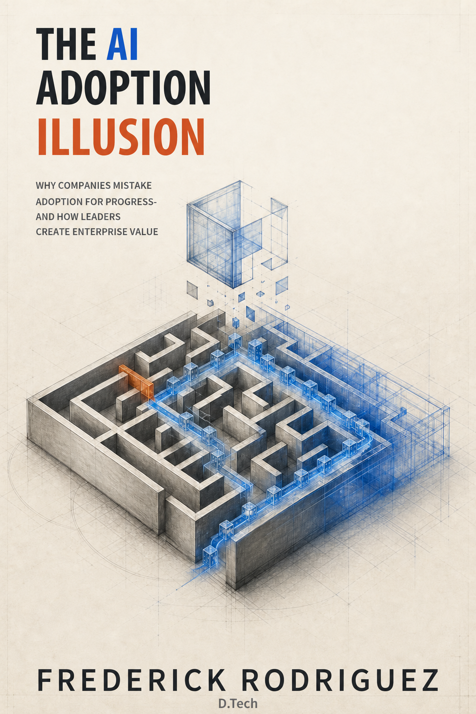

Are we measuring adoption or enterprise value?
Implementation measures reveal activity. Strategic measures illuminate whether decisions, institutional capabilities, and results have improved.
THE BOOK / 2026
Why Companies Mistake Adoption for Progress—and How Leaders Create Enterprise Value

THE CENTRAL ARGUMENT
Artificial intelligence is reshaping what organizations can accomplish. Whether those capabilities become sustainable value depends on the systems that direct and govern them.
The AI Adoption Illusion examines the gap between technology implementation and organizational progress. It explores how strategy, leadership, accountability, and institutional learning influence whether innovation strengthens the enterprise—or simply adds complexity.
Written for executives, technology leaders, and researchers, the book advances a systems perspective on technological change and strategic responsibility.
QUESTIONS THAT MATTER
Implementation measures reveal activity. Strategic measures illuminate whether decisions, institutional capabilities, and results have improved.
Greater technological capacity creates corresponding demands for accountability, coordination, and organizational judgment.
Useful information becomes strategic intelligence when institutions can interpret it, act upon it, and learn from its consequences.
WHO IT IS FOR
Executives and board members responsible for direction, risk, and institutional performance.
Decision makers accountable for aligning AI implementation with strategic priorities.
Researchers and students examining governance, strategy, digital transformation, and systems thinking.
A FINAL THOUGHT
For institutional orders, speaking engagements, or discussions of the book's ideas, visit the contact page. Retail purchase links will be added when confirmed.
Contact the Author